Network Architecture
Design Paradigms
So far, we’ve seen a bottom-up view of the Internet, starting with fundamental pieces to build up the overall picture. In this section, we’ll take a top-down view of the Internet, and analyze the overarching architectural choices in the design.
These Internet design paradigms influence why the Internet works the way it does, and also influences the applications we build on top of the Internet. These paradigms were a radical departure from how systems were historically built.
These designs are just one of many possible designs, and many design choices were made years ago, before the Internet grew to its current scale. Other designs exist, and debates still exist about what the best design is.
For example, the Internet was built to be federated (independent operators cooperating), but in recent years, software-defined networking (SDN) emerged as a more centralized approach to managing a network.
In the original Internet, switches were intentionally designed to be dumb and forward data without parsing it. However, in the modern Internet, attackers might try to overwhelm a switch by flooding it with useless data, and switches might need a way to detect this. Early Internet designers who came up with the dumb infrastructure paradigm did not consider this security implication.
Narrow Waist
It’s possible to have multiple protocols at a given layer. For example, at Layer 7, we could use HTTP to serve websites, or NTP to sync system clocks, both built on the same Internet infrastructure. Or, at Layer 2, we could use Ethernet for wired networks, or Wi-Fi for wireless networks.
Note that even though there are multiple protocols at a given layer, you can commit to using a specific stack of protocols for your application. For example, you can commit to using HTTP over TCP over IP, and you don’t need to use the other Layer 7 or Layer 4 protocols. Then, everybody using your application uses the same stack.
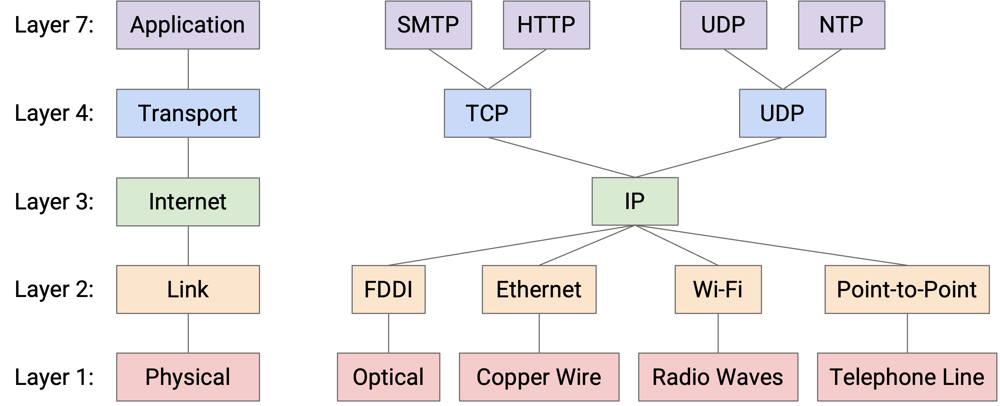
If you look at this diagram, you’ll notice there’s only one protocol at Layer 3. This is the “narrow waist” that enables Internet connectivity. Ultimately, everybody on the Internet must agree to speak IP so that packets can be sent across the Internet.
Demultiplexing
TODO write about demultiplexing.
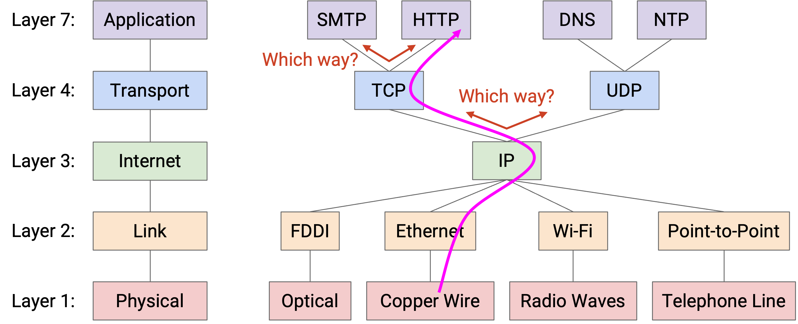
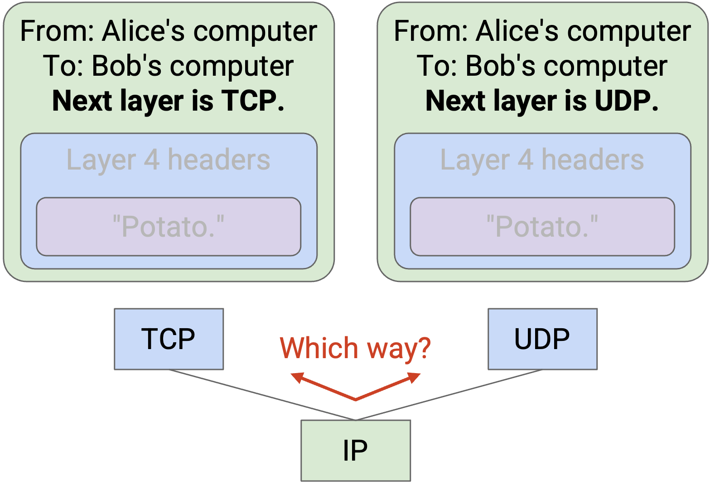
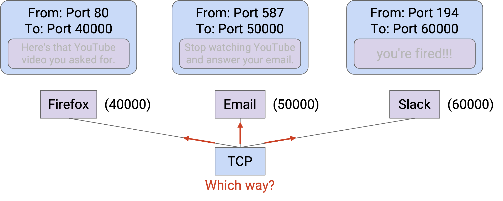
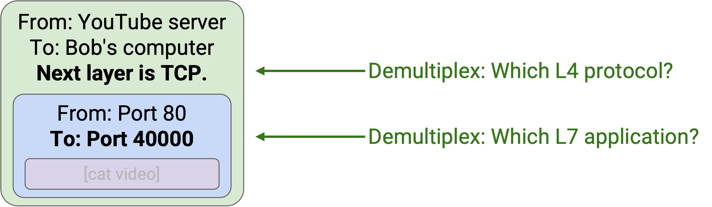
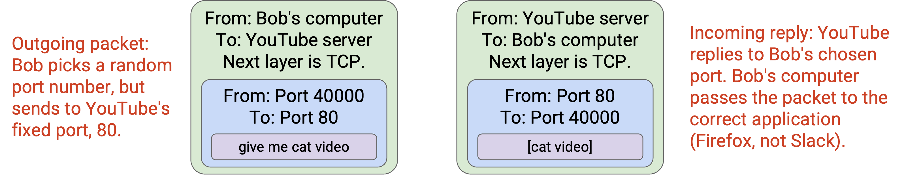
Be careful about naming. In networking, two different things are called ports. A physical port is the actual physical place where you plug a link into a switch. A logical port is a number in the Layer 4 header to disambiguate which application a packet belongs to.
Note: The term socket refers to an OS mechanism for connecting an application to the networking stack in the OS. When an application opens a socket, that socket is associated with a logical port number. When the OS receives a packet, it uses the port number to direct that packet to the associated socket.
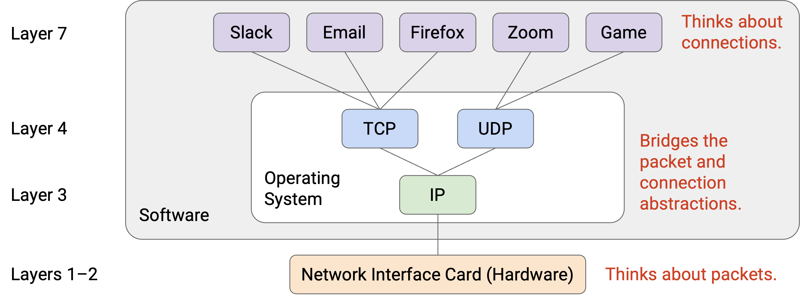
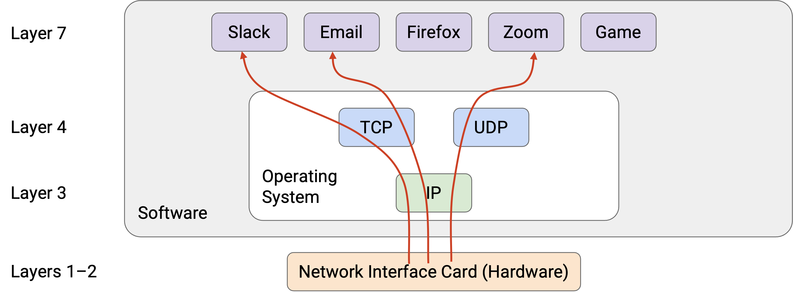
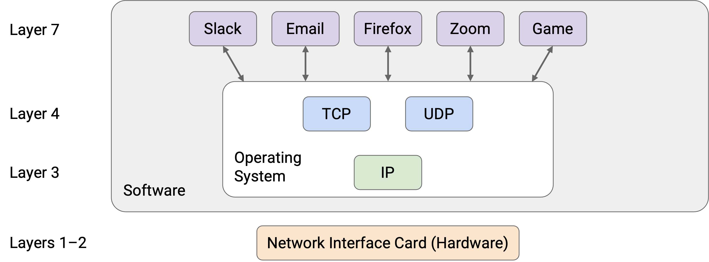
End-to-End Principle
Why did we design the Internet with the layering structure that we did? Why do only the hosts understand Layers 4 and 7, and not the routers as well?
The end-to-end principle offers wisdom and guidance for designing the Internet. David D. Clark, a scientist at MIT and a member of the Internet Architecture Board, was a major contributor to this principle. Two of his papers, “End-to-End Arguments in System Design” (1981) and “The Design Philosophy of the DARPA Internet Protocols” (1988), were hugely influential on the philosophy of the Internet design.
The end-to-end principle guides the debate about what functionality the network does and doesn’t implement. The principle is quite broad and has many applications, but we’ll focus on the question of: Should we implement reliability (Layer 4) in the network, or only at the end hosts?
For now, let’s think of a simple protocol for reliability. Host A wants to send 10 packets to Host B, so it sends the packets, numbered 1 through 10, across the network. The goal is for B to either receive all the packets, or realize that some packets got lost and error (we’ll ignore recovering from the error).
What would the Internet look like if we implemented reliability in the network? Unlike our picture from earlier, every router must now understand Layer 4 in addition to Layers 1, 2, and 3.
With this new picture, an intermediate router must reliably send a packet to its next hop. It must guarantee that the next hop received all the packets, and if not, the router must re-send any lost packets. The hosts don’t check that all packets were received, and instead rely on the network to ensure that all packets were received.
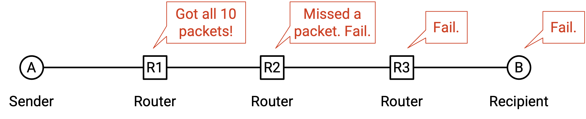
In this approach, the hosts have to trust the network. If one of the routers is buggy, and drops a packet, there’s nothing the hosts can really do about it.
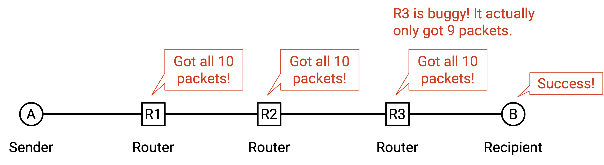
The other approach is the end-to-end approach, where we do not implement reliability in the network, and we instead force the two end hosts to enforce reliability. Routers can drop packets, and it’s up to the end hosts to verify that all packets were received.
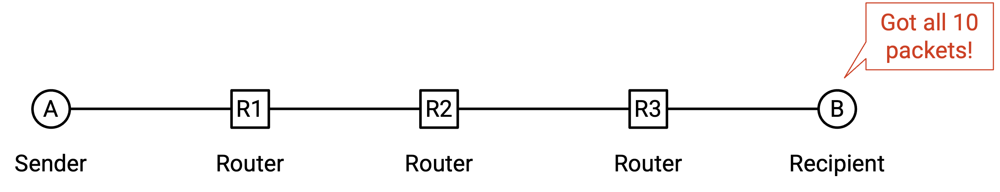
In the end-to-end approach, where the end hosts implemented reliability, the control is with the hosts. The hosts could still be buggy and drop packets, but this time, the hosts have the power to fix the bug themselves. More generally, if you’re writing code, it’s better if you have the control over making the feature correct, instead of relying on other people who might mess up (and you can’t fix their mistakes).
With this comparison in mind, if we used the first approach, where we relied on the network to be correct, we can’t actually guarantee perfect reliability if the network is buggy. The end hosts would probably end up doing an end-to-end check (as in the second solution) anyway.
In the old Internet, every link did implement reliability. However, as we saw, the modern Internet only implements best-effort in the network, and forces the end hosts to implement reliability, in line with the end-to-end principle.
In summary: Some application requirements must be implemented end-to-end in order to ensure correctness. Also, the end-to-end implementation is sufficient, and no additional support from the network is needed. Because the end-to-end implementation alone is sufficient, adding network functionality would introduce additional unnecessary complexity (and cost), without helping us actually achieve the requirements.
Note that the end-to-end principle is not a proof or a theorem that’s always true. It’s a guiding principle and a philosophical argument, and different designers might make different arguments for or against the principle.
Here’s an example of the end-to-end principle not being a strict rule. Even though the end-to-end principle says to implement reliability in the end hosts only, we could still add some extra reliability in the network in addition to the end-to-end check. This might be useful if we have highly unreliable links. Suppose there are 10 links between A and B, and each one fails 10% of the time. Then, each time we send the packet, it has a 65% chance of getting dropped. However, if each router was modified to send two copies of the packet for reliability purposes, each link only fails 0.1% of the time, and packets now only have a 1% chance of getting dropped. Wireless links will sometimes implement reliability to reduce error rates and improve performance for the end hosts.
The end-to-end principle extends to other fields as well. For example, in security, the end-to-end principle might say that two end hosts communicating should encrypt their messages at the end hosts, instead of at intermediate points in the network.
The end-to-end argument in Clark’s words: “The function in question can completely and correctly be implemented only with the knowledge and help of the application at the end points. Therefore, providing that function as a feature of the communication system itself is not possible. Sometimes an incomplete version of the function provided by the communication system may be useful as a performance enhancement.”